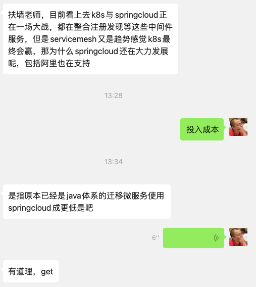
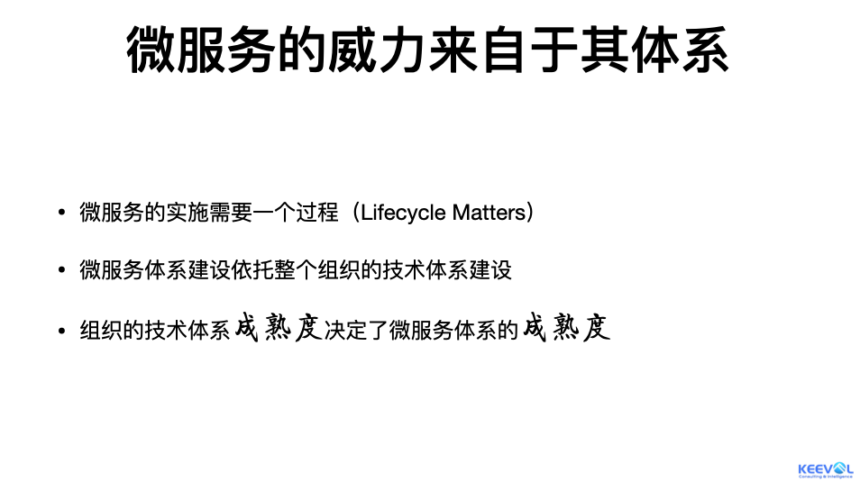
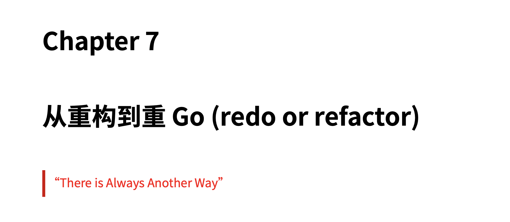

SpringCloud与K8S谁与争锋？
王福强
2021-03-28现在很少做技术科普了， 只不过今天又有原厂某小伙儿 1找我解答技术疑问，遂唠叨几句…

其实正常来讲，SpringCloud和k8s应该不在一个比较的层面上，包括Service Mesh, 如果非要比较，那应该是在微服务技术体系这个大的概念下去比较， 就好像我在给企业做的内训《微服务深度揭秘》中所阐述的那样，SpringCloud也好， k8s也好，都只是实现你自己组织里微服务技术体系的一种选择而已，但绝对不是唯一的选择。

微服务的好处来自于它的体系，而不是使用什么技术， 唯一的选择标准我认为就是“适合不适合，hold不hold住”。
讨论什么技术优秀或者是未来之星,对于技术人员去了解技术趋势当然是好的，但对于组织来说，则不一定。对于组织来说， 使用合适的技术，高效稳定的解决业务问题（以及衍生出来的技术问题）才应该是技术团队的核心目标。
过于关注技术的倾向，很容易走入误区，比如动不动要重写系统，导致组织付出沉重的负担 2：

原则上来说，因为任何个人和组织都会在时间线上做出自己的投入，形成一种“沉没成本”，形成自己的依赖路径，所以，任何前期的投入都是有价值的，也应该继续发挥它的价值，所以，不能因为有了更好的技术升级就直接全盘否定或者抛弃旧有的沉淀下来的基础设施，在这个前提下，只要原有设施足够稳定，足够支撑业务发展，足够具有演化空间，我们就应该继续在上面添砖加瓦，如果有一些阻碍，那就想办法做重构，以更小的风险敞口来推进系统和基础设施的演化。
或许k8s和service mesh的思路很好，现在也很普遍了，但这不意味着“你不用他们，组织的数字化效能就比别人更差”，一定是具体情况具体分析，而不是盲目大干快上， 你一中小企业就几台或者十几台服务器，用至少三四台机器搭个k8s集群干嘛？先IT预算多得花不过来吗？ 如果你原来就有很成熟的技术体系，而且稳定应对业务扩张都绰绰有余，你非要折腾Service Mesh干嘛？ 嫌系统性的崩盘少了？ 很多时候，只有大厂才有折腾和试错的成本和空间（当然，个别场景，大厂也不一定让搞），中小企业还是尽量根据自身情况评估之后再慎重考虑PR稿才好，不要自己没有能力hold，还非要搞Service Mesh，最后可能Service Mesh没搞成，却搞成了Service Mess。
至于说技术赢家这个话题，其实根本就没有‘最终赢’这一说，大家都只是过客和阶段性的赢，这是总的过程纲领 ；）